习题3
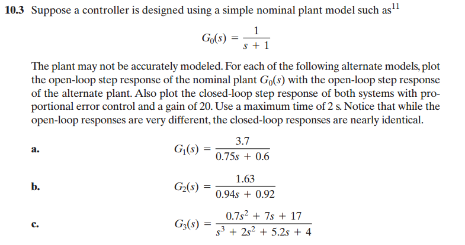
画出常态模型开环阶跃响应
G_0 = tf([1],[1,1]);
G_1 = tf([3.7],[0.75,0.6]);
G_2 = tf([1.63],[0.94,0.92]);
G_3 = tf([0.7,7,17],[1,2,5.2,4]);t = linspace(0,2,30);
y_0 = step(G_0, t);
y_1 = step(G_1, t);
y_2 = step(G_2, t);
y_3 = step(G_3, t);
plot(t,y_0,'k-')
hold on
plot(t,y_1,'k--')
plot(t,y_2,'k-.')
plot(t,y_3,'ks-')
xlabel('Time')
ylabel('step response')
legend('G_0','G_1','G_2','G_3')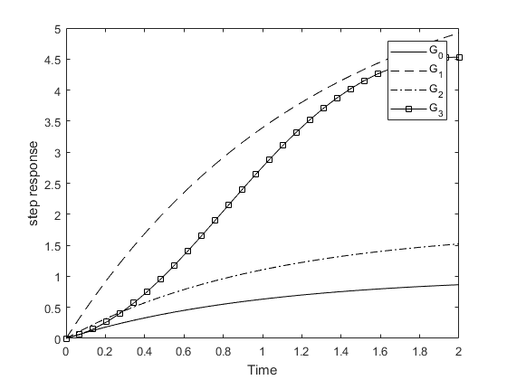
画出闭环阶跃响应
与上面的开环响应不同，闭环响应需要加上一个feedback。
y_f0 = step(feedback(20*G_0,1),t);
y_f1 = step(feedback(20*G_1,1),t);
y_f2 = step(feedback(20*G_2,1),t);
y_f3 = step(feedback(20*G_3,1),t);
plot(t,y_f0,'-')
hold on
plot(t,y_f1,'-.')
plot(t,y_f2,'--')
plot(t,y_f3,'s-')
xlabel('Time')
ylabel('state response')
legend('G_0','G_1','G_2','G_3')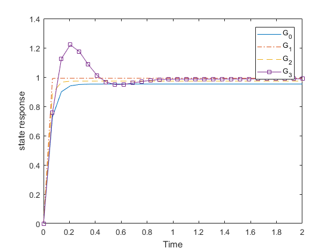
习题7
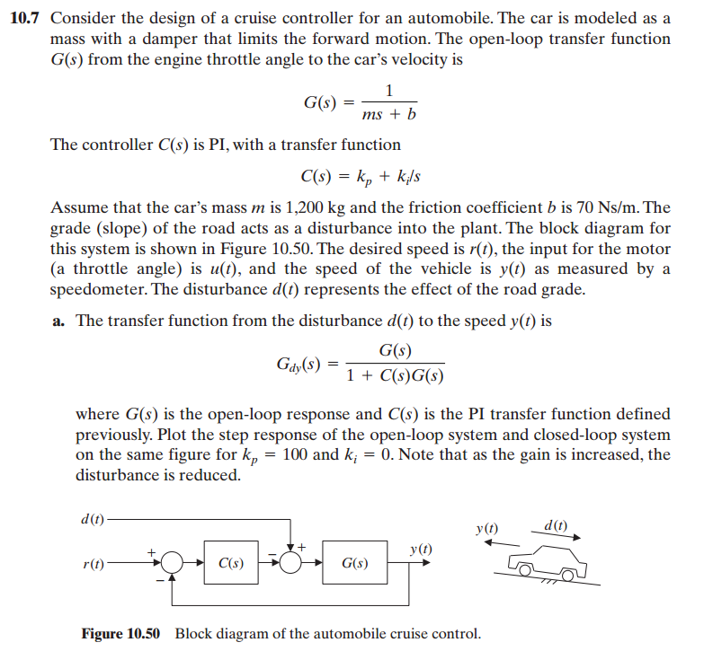
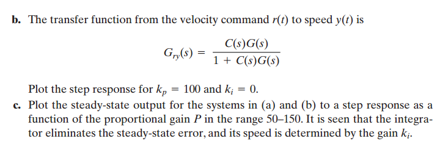
a
让我们根据扰动到速度的传递函数\(G_{dy}(s) \)，画出当\(k_p=100\),\(k_i=0\)时系统的开环及闭环的阶跃响应曲线
m = 1200;
b = 70;
k_p = 100;
k_i = 0;
t = linspace(0,10,200);C = k_p + tf([k_i],[1,0]);
G = tf([1],[m,b]);
G_dy = G / (1+C*G)G_dy =
1200 s + 70
------------------------------
1.44e06 s^2 + 288000 s + 11900
Continuous-time transfer function.y_open = step(G_dy,t);
plot(t,y_open,'k--')
hold on
y_closed = step(feedback(G_dy,1),t);
plot(t,y_closed,'-.')
xlabel('Time');
ylabel('Response');
legend('open','closed')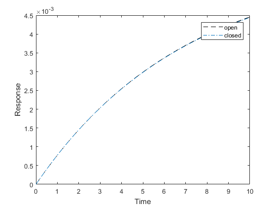
从上图看出开环和闭环响应曲线几乎重合
b
让我们画出速度目标值到速度输出\(G_{ry}(s) \)的阶跃响应曲线，这是闭环响应
G_ry = C*G/(1+C*G);
y_ry = step(feedback(G_ry,1),t);
plot(t,y_ry,'k-')
xlabel('Time');
ylabel('Response');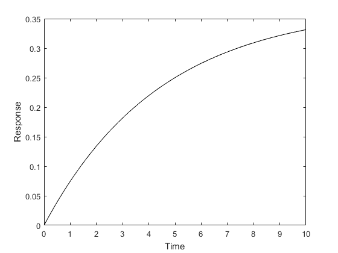
c
比例增益P的变化范围在50-150之间，画出a和b阶跃响应的系统稳态输出。
p = linspace(50,150,200);
hold on
for i = p
y = step(feedback(i*G_dy,1),t);
plot(t,y,'k--')
end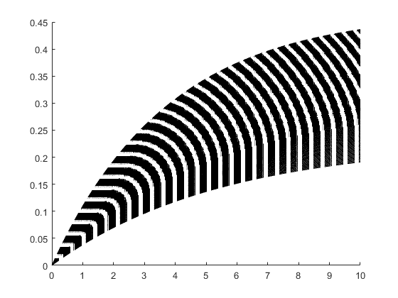
hold on
for i = p
y = step(feedback(i*G_ry,1),t);
plot(t,y,'k--')
end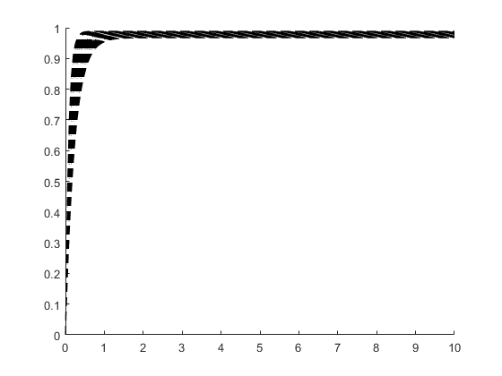
习题11
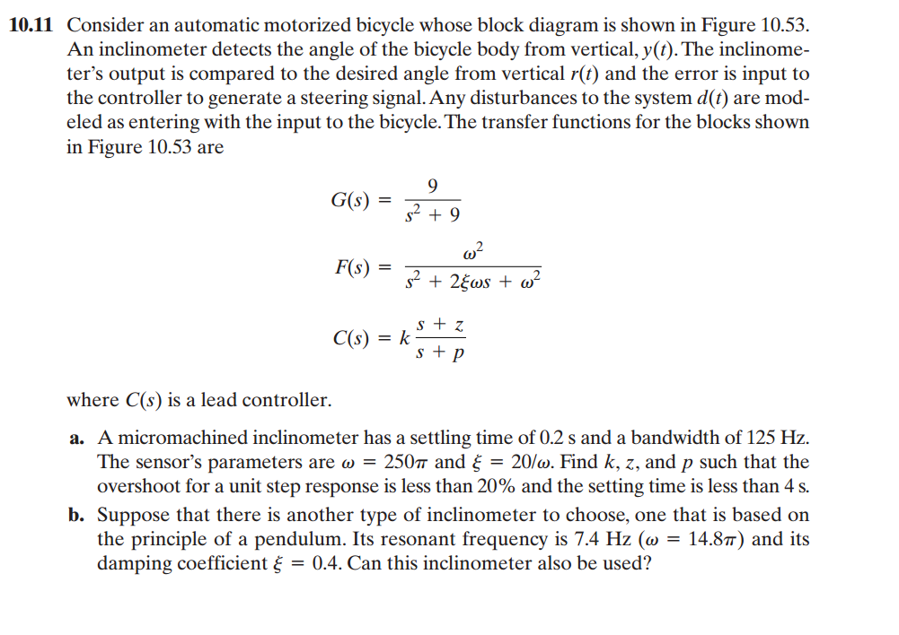
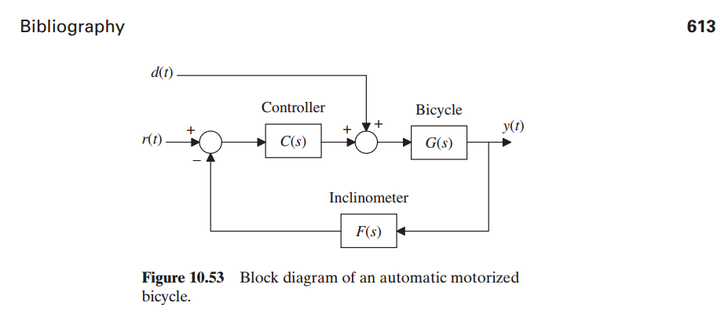
a
拿到这道题首先想到的就是建立三个循环，一次循环z,k,p,这样肯定可以找到满足超调小于20，调整时间小于4s的z,k,p。但是这样的计算量是相当巨大的，需要跑很久才能跑出答案，因为题目要求找到一个满足条件的k,z,p就行了，那么我可以尝试先定下来z,我令z=2，然后循环找出满足条件的k和p。
clc
clear all
w=250*pi;
ksi=20/w;
G=tf([9],[1,0,9]);
F=tf([w^2],[1,2*ksi*w,w^2]);
fitted = [];
all_cri = [];
z = 2;
for k=linspace(1,600,50)
for p=linspace(1,600,50)
C=tf([k,k*z],[1,p]);
cri=transient(feedback(G*C,F));
all_cri = [all_cri cri];
if cri(2)<4 && cri(3)<20
fitted = [fitted k z p];
end
end
end
[wid,hei] = size(all_cri);
all_cri = reshape(all_cri,3,hei/3)'; # 调整矩阵形式，使它变成n x 3的格式
[wid,hei] = size(fitted);
fitted = reshape(fitted,3,hei/3)';
fittedfitted =
1.0000 2.0000 1.0000
13.2245 2.0000 1.0000
25.4490 2.0000 1.0000
37.6735 2.0000 1.0000
49.8980 2.0000 1.0000
62.1224 2.0000 1.0000
74.3469 2.0000 1.0000
86.5714 2.0000 1.0000
98.7959 2.0000 1.0000
111.0204 2.0000 1.0000
123.2449 2.0000 1.0000
135.4694 2.0000 1.0000
147.6939 2.0000 1.0000
159.9184 2.0000 1.0000
172.1429 2.0000 1.0000
184.3673 2.0000 1.0000
196.5918 2.0000 1.0000
208.8163 2.0000 1.0000
221.0408 2.0000 1.0000
233.2653 2.0000 1.0000
245.4898 2.0000 1.0000
257.7143 2.0000 1.0000
269.9388 2.0000 1.0000
282.1633 2.0000 1.0000
294.3878 2.0000 1.0000
306.6122 2.0000 1.0000
318.8367 2.0000 1.0000
318.8367 2.0000 86.5714
331.0612 2.0000 1.0000
331.0612 2.0000 86.5714
331.0612 2.0000 98.7959
343.2857 2.0000 1.0000
343.2857 2.0000 86.5714
343.2857 2.0000 98.7959
355.5102 2.0000 1.0000
355.5102 2.0000 86.5714
355.5102 2.0000 98.7959
355.5102 2.0000 111.0204
367.7347 2.0000 1.0000
367.7347 2.0000 86.5714
367.7347 2.0000 98.7959
367.7347 2.0000 111.0204
379.9592 2.0000 1.0000
379.9592 2.0000 86.5714
379.9592 2.0000 98.7959
379.9592 2.0000 111.0204
379.9592 2.0000 123.2449
392.1837 2.0000 1.0000
392.1837 2.0000 86.5714
392.1837 2.0000 98.7959
392.1837 2.0000 111.0204
392.1837 2.0000 123.2449
404.4082 2.0000 1.0000
404.4082 2.0000 86.5714
404.4082 2.0000 98.7959
404.4082 2.0000 111.0204
404.4082 2.0000 123.2449
416.6327 2.0000 1.0000
416.6327 2.0000 86.5714
416.6327 2.0000 98.7959
416.6327 2.0000 111.0204
416.6327 2.0000 123.2449
416.6327 2.0000 135.4694
428.8571 2.0000 1.0000
428.8571 2.0000 86.5714
428.8571 2.0000 98.7959
428.8571 2.0000 111.0204
428.8571 2.0000 123.2449
428.8571 2.0000 135.4694
441.0816 2.0000 1.0000
441.0816 2.0000 86.5714
441.0816 2.0000 98.7959
441.0816 2.0000 111.0204
441.0816 2.0000 123.2449
441.0816 2.0000 135.4694
441.0816 2.0000 147.6939
453.3061 2.0000 1.0000
453.3061 2.0000 86.5714
453.3061 2.0000 98.7959
453.3061 2.0000 111.0204
453.3061 2.0000 123.2449
453.3061 2.0000 135.4694
453.3061 2.0000 147.6939
465.5306 2.0000 1.0000
465.5306 2.0000 86.5714
465.5306 2.0000 98.7959
465.5306 2.0000 111.0204
465.5306 2.0000 123.2449
465.5306 2.0000 135.4694
465.5306 2.0000 147.6939
477.7551 2.0000 1.0000
477.7551 2.0000 86.5714
477.7551 2.0000 98.7959
477.7551 2.0000 111.0204
477.7551 2.0000 123.2449
477.7551 2.0000 135.4694
477.7551 2.0000 147.6939
477.7551 2.0000 159.9184
489.9796 2.0000 1.0000
489.9796 2.0000 98.7959
489.9796 2.0000 111.0204
489.9796 2.0000 123.2449
489.9796 2.0000 135.4694
489.9796 2.0000 147.6939
489.9796 2.0000 159.9184
502.2041 2.0000 1.0000
502.2041 2.0000 98.7959
502.2041 2.0000 111.0204
502.2041 2.0000 123.2449
502.2041 2.0000 135.4694
502.2041 2.0000 147.6939
502.2041 2.0000 159.9184
514.4286 2.0000 1.0000
514.4286 2.0000 98.7959
514.4286 2.0000 111.0204
514.4286 2.0000 123.2449
514.4286 2.0000 135.4694
514.4286 2.0000 147.6939
514.4286 2.0000 159.9184
514.4286 2.0000 172.1429
526.6531 2.0000 1.0000
526.6531 2.0000 98.7959
526.6531 2.0000 111.0204
526.6531 2.0000 123.2449
526.6531 2.0000 135.4694
526.6531 2.0000 147.6939
526.6531 2.0000 159.9184
526.6531 2.0000 172.1429
538.8776 2.0000 1.0000
538.8776 2.0000 98.7959
538.8776 2.0000 111.0204
538.8776 2.0000 123.2449
538.8776 2.0000 135.4694
538.8776 2.0000 147.6939
538.8776 2.0000 159.9184
538.8776 2.0000 172.1429
551.1020 2.0000 1.0000
551.1020 2.0000 98.7959
551.1020 2.0000 111.0204
551.1020 2.0000 123.2449
551.1020 2.0000 135.4694
551.1020 2.0000 147.6939
551.1020 2.0000 159.9184
551.1020 2.0000 172.1429
551.1020 2.0000 184.3673
563.3265 2.0000 1.0000
563.3265 2.0000 98.7959
563.3265 2.0000 111.0204
563.3265 2.0000 123.2449
563.3265 2.0000 135.4694
563.3265 2.0000 147.6939
563.3265 2.0000 159.9184
563.3265 2.0000 172.1429
563.3265 2.0000 184.3673
575.5510 2.0000 1.0000
575.5510 2.0000 98.7959
575.5510 2.0000 111.0204
575.5510 2.0000 123.2449
575.5510 2.0000 135.4694
575.5510 2.0000 147.6939
575.5510 2.0000 159.9184
575.5510 2.0000 172.1429
575.5510 2.0000 184.3673
575.5510 2.0000 196.5918
587.7755 2.0000 1.0000
587.7755 2.0000 98.7959
587.7755 2.0000 111.0204
587.7755 2.0000 123.2449
587.7755 2.0000 135.4694
587.7755 2.0000 147.6939
587.7755 2.0000 159.9184
587.7755 2.0000 172.1429
587.7755 2.0000 184.3673
587.7755 2.0000 196.5918
600.0000 2.0000 1.0000
600.0000 2.0000 98.7959
600.0000 2.0000 111.0204
600.0000 2.0000 123.2449
600.0000 2.0000 135.4694
600.0000 2.0000 147.6939
600.0000 2.0000 159.9184
600.0000 2.0000 172.1429
600.0000 2.0000 184.3673
600.0000 2.0000 196.5918fitted都是满足条件的k,z,p。
b
同样的，更改w和ksi，我们再把z定成2，然后循环找到满足条件的k,p。
clc
clear all
w=14.8*pi;
ksi=0.4;
G=tf([9],[1,0,9]);
F=tf([w^2],[1,2*ksi*w,w^2]);
fitted = [];
all_cri = [];
z = 2;
for k=linspace(1,600,50)
for p=linspace(1,600,50)
C=tf([k,k*z],[1,p]);
cri=transient(feedback(G*C,F));
all_cri = [all_cri cri];
if cri(2)<4 && cri(3)<20
fitted = [fitted k z p];
end
end
end
[wid,hei] = size(all_cri);
all_cri = reshape(all_cri,3,hei/3)';
[wid,hei] = size(fitted);
fitted = reshape(fitted,3,hei/3)';fittedfitted =
1.0000 2.0000 1.0000
13.2245 2.0000 1.0000
25.4490 2.0000 1.0000
37.6735 2.0000 1.0000
49.8980 2.0000 1.0000
62.1224 2.0000 1.0000
62.1224 2.0000 13.2245
74.3469 2.0000 1.0000
74.3469 2.0000 13.2245
86.5714 2.0000 1.0000
86.5714 2.0000 13.2245
98.7959 2.0000 1.0000
98.7959 2.0000 13.2245
98.7959 2.0000 25.4490
111.0204 2.0000 1.0000
111.0204 2.0000 13.2245
111.0204 2.0000 25.4490
123.2449 2.0000 1.0000
123.2449 2.0000 13.2245
123.2449 2.0000 25.4490
135.4694 2.0000 1.0000
135.4694 2.0000 13.2245
135.4694 2.0000 25.4490
135.4694 2.0000 37.6735
147.6939 2.0000 1.0000
147.6939 2.0000 13.2245
147.6939 2.0000 25.4490
147.6939 2.0000 37.6735
159.9184 2.0000 1.0000
159.9184 2.0000 13.2245
159.9184 2.0000 25.4490
159.9184 2.0000 37.6735
172.1429 2.0000 1.0000
172.1429 2.0000 13.2245
172.1429 2.0000 25.4490
172.1429 2.0000 37.6735
172.1429 2.0000 49.8980
184.3673 2.0000 1.0000
184.3673 2.0000 13.2245
184.3673 2.0000 25.4490
184.3673 2.0000 37.6735
184.3673 2.0000 49.8980
196.5918 2.0000 1.0000
196.5918 2.0000 13.2245
196.5918 2.0000 25.4490
196.5918 2.0000 37.6735
196.5918 2.0000 49.8980
208.8163 2.0000 1.0000
208.8163 2.0000 13.2245
208.8163 2.0000 25.4490
208.8163 2.0000 37.6735
208.8163 2.0000 49.8980
221.0408 2.0000 1.0000
221.0408 2.0000 13.2245
221.0408 2.0000 25.4490
221.0408 2.0000 37.6735
221.0408 2.0000 49.8980
221.0408 2.0000 62.1224
233.2653 2.0000 1.0000
233.2653 2.0000 13.2245
233.2653 2.0000 25.4490
233.2653 2.0000 37.6735
233.2653 2.0000 49.8980
233.2653 2.0000 62.1224
245.4898 2.0000 1.0000
245.4898 2.0000 13.2245
245.4898 2.0000 25.4490
245.4898 2.0000 37.6735
245.4898 2.0000 49.8980
245.4898 2.0000 62.1224
257.7143 2.0000 1.0000
257.7143 2.0000 13.2245
257.7143 2.0000 25.4490
257.7143 2.0000 37.6735
257.7143 2.0000 49.8980
257.7143 2.0000 62.1224
257.7143 2.0000 74.3469
269.9388 2.0000 1.0000
269.9388 2.0000 13.2245
269.9388 2.0000 25.4490
269.9388 2.0000 37.6735
269.9388 2.0000 49.8980
269.9388 2.0000 62.1224
269.9388 2.0000 74.3469
282.1633 2.0000 1.0000
282.1633 2.0000 13.2245
282.1633 2.0000 25.4490
282.1633 2.0000 37.6735
282.1633 2.0000 49.8980
282.1633 2.0000 62.1224
282.1633 2.0000 74.3469
294.3878 2.0000 1.0000
294.3878 2.0000 13.2245
294.3878 2.0000 25.4490
294.3878 2.0000 37.6735
294.3878 2.0000 49.8980
294.3878 2.0000 62.1224
294.3878 2.0000 74.3469
294.3878 2.0000 86.5714
306.6122 2.0000 1.0000
306.6122 2.0000 13.2245
306.6122 2.0000 25.4490
306.6122 2.0000 37.6735
306.6122 2.0000 49.8980
306.6122 2.0000 62.1224
306.6122 2.0000 74.3469
306.6122 2.0000 86.5714
318.8367 2.0000 1.0000
318.8367 2.0000 13.2245
318.8367 2.0000 25.4490
318.8367 2.0000 37.6735
318.8367 2.0000 49.8980
318.8367 2.0000 62.1224
318.8367 2.0000 74.3469
318.8367 2.0000 86.5714
331.0612 2.0000 1.0000
331.0612 2.0000 13.2245
331.0612 2.0000 25.4490
331.0612 2.0000 37.6735
331.0612 2.0000 49.8980
331.0612 2.0000 62.1224
331.0612 2.0000 74.3469
331.0612 2.0000 86.5714
343.2857 2.0000 1.0000
343.2857 2.0000 13.2245
343.2857 2.0000 25.4490
343.2857 2.0000 37.6735
343.2857 2.0000 49.8980
343.2857 2.0000 62.1224
343.2857 2.0000 74.3469
343.2857 2.0000 86.5714
343.2857 2.0000 98.7959
355.5102 2.0000 1.0000
355.5102 2.0000 13.2245
355.5102 2.0000 25.4490
355.5102 2.0000 37.6735
355.5102 2.0000 49.8980
355.5102 2.0000 62.1224
355.5102 2.0000 74.3469
355.5102 2.0000 86.5714
355.5102 2.0000 98.7959
367.7347 2.0000 1.0000
367.7347 2.0000 13.2245
367.7347 2.0000 25.4490
367.7347 2.0000 37.6735
367.7347 2.0000 49.8980
367.7347 2.0000 62.1224
367.7347 2.0000 74.3469
367.7347 2.0000 86.5714
367.7347 2.0000 98.7959
379.9592 2.0000 1.0000
379.9592 2.0000 13.2245
379.9592 2.0000 25.4490
379.9592 2.0000 37.6735
379.9592 2.0000 49.8980
379.9592 2.0000 62.1224
379.9592 2.0000 74.3469
379.9592 2.0000 86.5714
379.9592 2.0000 98.7959
379.9592 2.0000 111.0204
392.1837 2.0000 1.0000
392.1837 2.0000 13.2245
392.1837 2.0000 25.4490
392.1837 2.0000 37.6735
392.1837 2.0000 49.8980
392.1837 2.0000 62.1224
392.1837 2.0000 74.3469
392.1837 2.0000 86.5714
392.1837 2.0000 98.7959
392.1837 2.0000 111.0204
404.4082 2.0000 1.0000
404.4082 2.0000 13.2245
404.4082 2.0000 25.4490
404.4082 2.0000 37.6735
404.4082 2.0000 49.8980
404.4082 2.0000 62.1224
404.4082 2.0000 74.3469
404.4082 2.0000 86.5714
404.4082 2.0000 98.7959
404.4082 2.0000 111.0204
416.6327 2.0000 1.0000
416.6327 2.0000 13.2245
416.6327 2.0000 25.4490
416.6327 2.0000 37.6735
416.6327 2.0000 49.8980
416.6327 2.0000 62.1224
416.6327 2.0000 74.3469
416.6327 2.0000 86.5714
416.6327 2.0000 98.7959
416.6327 2.0000 111.0204
428.8571 2.0000 1.0000
428.8571 2.0000 13.2245
428.8571 2.0000 25.4490
428.8571 2.0000 37.6735
428.8571 2.0000 49.8980
428.8571 2.0000 62.1224
428.8571 2.0000 74.3469
428.8571 2.0000 86.5714
428.8571 2.0000 98.7959
428.8571 2.0000 111.0204
428.8571 2.0000 123.2449
441.0816 2.0000 1.0000
441.0816 2.0000 13.2245
441.0816 2.0000 25.4490
441.0816 2.0000 37.6735
441.0816 2.0000 49.8980
441.0816 2.0000 62.1224
441.0816 2.0000 74.3469
441.0816 2.0000 86.5714
441.0816 2.0000 98.7959
441.0816 2.0000 111.0204
441.0816 2.0000 123.2449
453.3061 2.0000 1.0000
453.3061 2.0000 13.2245
453.3061 2.0000 25.4490
453.3061 2.0000 37.6735
453.3061 2.0000 49.8980
453.3061 2.0000 62.1224
453.3061 2.0000 74.3469
453.3061 2.0000 86.5714
453.3061 2.0000 98.7959
453.3061 2.0000 111.0204
453.3061 2.0000 123.2449
465.5306 2.0000 1.0000
465.5306 2.0000 13.2245
465.5306 2.0000 25.4490
465.5306 2.0000 37.6735
465.5306 2.0000 49.8980
465.5306 2.0000 62.1224
465.5306 2.0000 74.3469
465.5306 2.0000 86.5714
465.5306 2.0000 98.7959
465.5306 2.0000 111.0204
465.5306 2.0000 123.2449
465.5306 2.0000 135.4694
477.7551 2.0000 1.0000
477.7551 2.0000 13.2245
477.7551 2.0000 25.4490
477.7551 2.0000 37.6735
477.7551 2.0000 49.8980
477.7551 2.0000 62.1224
477.7551 2.0000 74.3469
477.7551 2.0000 86.5714
477.7551 2.0000 98.7959
477.7551 2.0000 111.0204
477.7551 2.0000 123.2449
477.7551 2.0000 135.4694
489.9796 2.0000 1.0000
489.9796 2.0000 13.2245
489.9796 2.0000 25.4490
489.9796 2.0000 37.6735
489.9796 2.0000 49.8980
489.9796 2.0000 62.1224
489.9796 2.0000 74.3469
489.9796 2.0000 86.5714
489.9796 2.0000 98.7959
489.9796 2.0000 111.0204
489.9796 2.0000 123.2449
489.9796 2.0000 135.4694
502.2041 2.0000 1.0000
502.2041 2.0000 13.2245
502.2041 2.0000 25.4490
502.2041 2.0000 37.6735
502.2041 2.0000 49.8980
502.2041 2.0000 62.1224
502.2041 2.0000 74.3469
502.2041 2.0000 86.5714
502.2041 2.0000 98.7959
502.2041 2.0000 111.0204
502.2041 2.0000 123.2449
502.2041 2.0000 135.4694
514.4286 2.0000 1.0000
514.4286 2.0000 13.2245
514.4286 2.0000 25.4490
514.4286 2.0000 37.6735
514.4286 2.0000 49.8980
514.4286 2.0000 62.1224
514.4286 2.0000 74.3469
514.4286 2.0000 86.5714
514.4286 2.0000 98.7959
514.4286 2.0000 111.0204
514.4286 2.0000 123.2449
514.4286 2.0000 135.4694
514.4286 2.0000 147.6939
526.6531 2.0000 1.0000
526.6531 2.0000 13.2245
526.6531 2.0000 25.4490
526.6531 2.0000 37.6735
526.6531 2.0000 49.8980
526.6531 2.0000 62.1224
526.6531 2.0000 74.3469
526.6531 2.0000 86.5714
526.6531 2.0000 98.7959
526.6531 2.0000 111.0204
526.6531 2.0000 123.2449
526.6531 2.0000 135.4694
526.6531 2.0000 147.6939
538.8776 2.0000 1.0000
538.8776 2.0000 13.2245
538.8776 2.0000 25.4490
538.8776 2.0000 37.6735
538.8776 2.0000 49.8980
538.8776 2.0000 62.1224
538.8776 2.0000 74.3469
538.8776 2.0000 86.5714
538.8776 2.0000 98.7959
538.8776 2.0000 111.0204
538.8776 2.0000 123.2449
538.8776 2.0000 135.4694
538.8776 2.0000 147.6939
551.1020 2.0000 1.0000
551.1020 2.0000 13.2245
551.1020 2.0000 25.4490
551.1020 2.0000 37.6735
551.1020 2.0000 49.8980
551.1020 2.0000 62.1224
551.1020 2.0000 74.3469
551.1020 2.0000 86.5714
551.1020 2.0000 98.7959
551.1020 2.0000 111.0204
551.1020 2.0000 123.2449
551.1020 2.0000 135.4694
551.1020 2.0000 147.6939
563.3265 2.0000 1.0000
563.3265 2.0000 13.2245
563.3265 2.0000 25.4490
563.3265 2.0000 37.6735
563.3265 2.0000 49.8980
563.3265 2.0000 62.1224
563.3265 2.0000 74.3469
563.3265 2.0000 86.5714
563.3265 2.0000 98.7959
563.3265 2.0000 111.0204
563.3265 2.0000 123.2449
563.3265 2.0000 135.4694
563.3265 2.0000 147.6939
563.3265 2.0000 159.9184
575.5510 2.0000 1.0000
575.5510 2.0000 13.2245
575.5510 2.0000 25.4490
575.5510 2.0000 37.6735
575.5510 2.0000 49.8980
575.5510 2.0000 62.1224
575.5510 2.0000 74.3469
575.5510 2.0000 86.5714
575.5510 2.0000 98.7959
575.5510 2.0000 111.0204
575.5510 2.0000 123.2449
575.5510 2.0000 135.4694
575.5510 2.0000 147.6939
575.5510 2.0000 159.9184
587.7755 2.0000 1.0000
587.7755 2.0000 13.2245
587.7755 2.0000 25.4490
587.7755 2.0000 37.6735
587.7755 2.0000 49.8980
587.7755 2.0000 62.1224
587.7755 2.0000 74.3469
587.7755 2.0000 86.5714
587.7755 2.0000 98.7959
587.7755 2.0000 111.0204
587.7755 2.0000 123.2449
587.7755 2.0000 135.4694
587.7755 2.0000 147.6939
587.7755 2.0000 159.9184
600.0000 2.0000 1.0000
600.0000 2.0000 13.2245
600.0000 2.0000 25.4490
600.0000 2.0000 37.6735
600.0000 2.0000 49.8980
600.0000 2.0000 62.1224
600.0000 2.0000 74.3469
600.0000 2.0000 86.5714
600.0000 2.0000 98.7959
600.0000 2.0000 111.0204
600.0000 2.0000 123.2449
600.0000 2.0000 135.4694
600.0000 2.0000 147.6939
600.0000 2.0000 159.9184
600.0000 2.0000 172.1429所以可以找到满足条件的k,z,p，也就是说这样的倾斜仪是可以使用的。